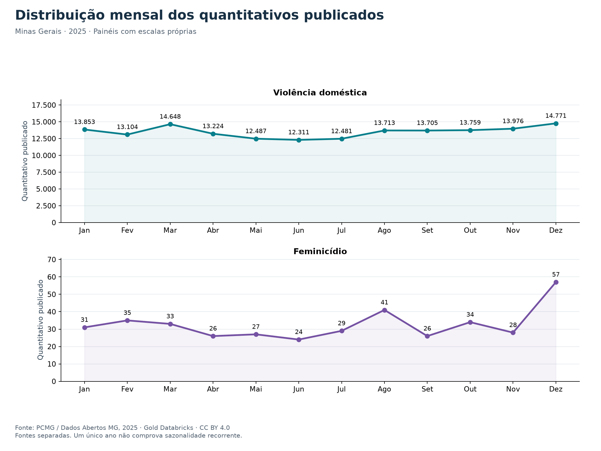
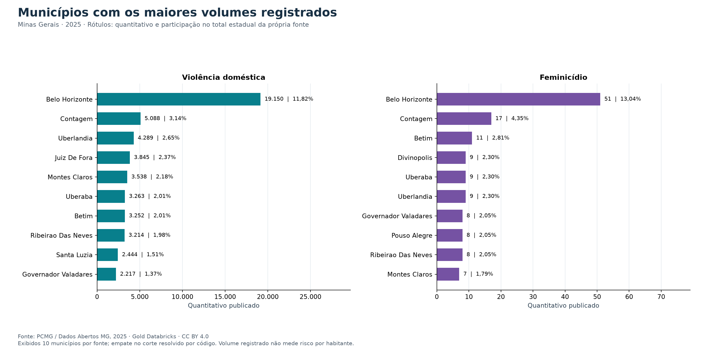
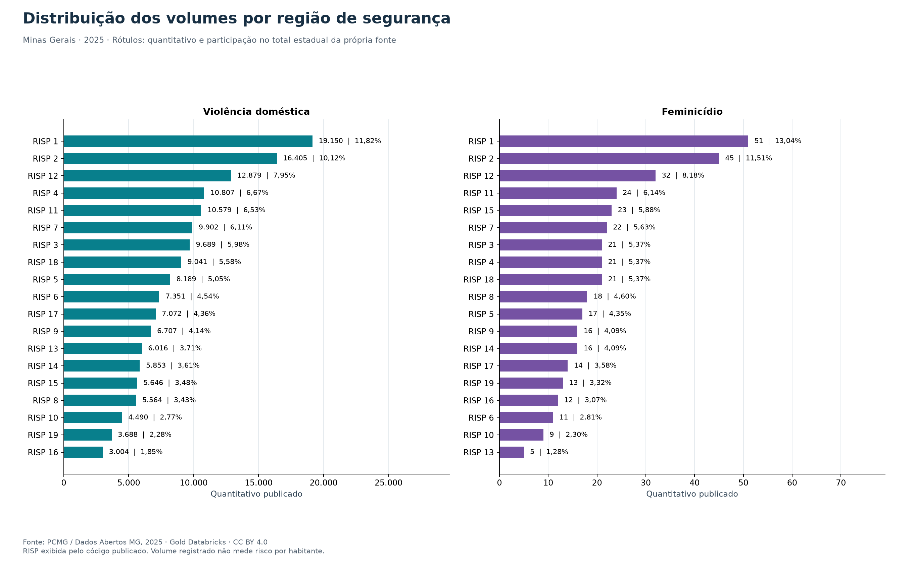
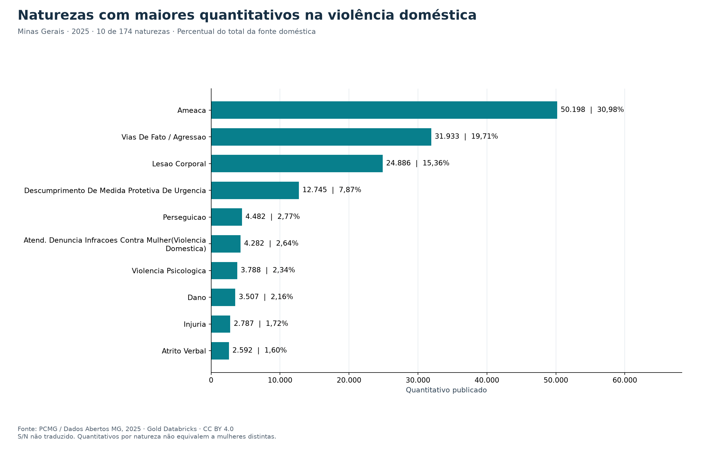
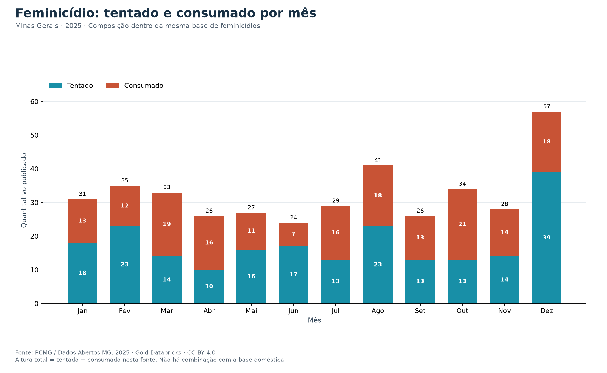
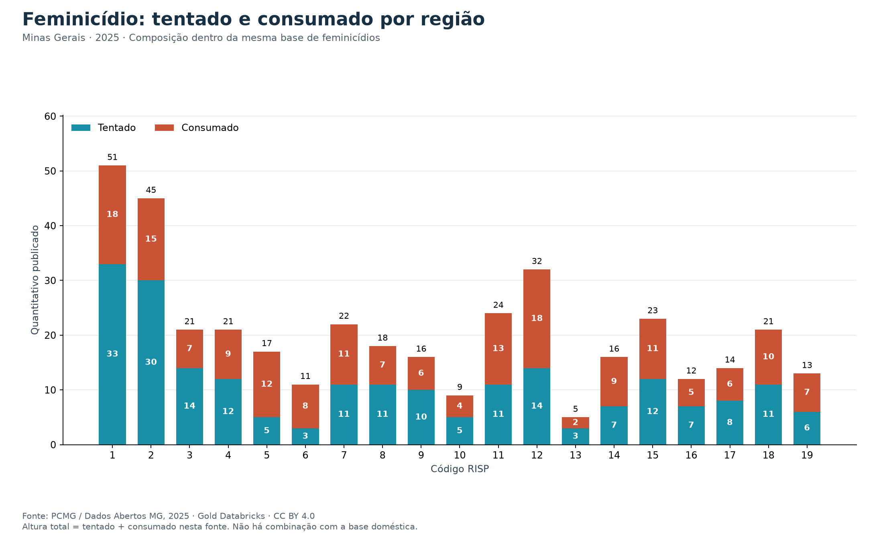
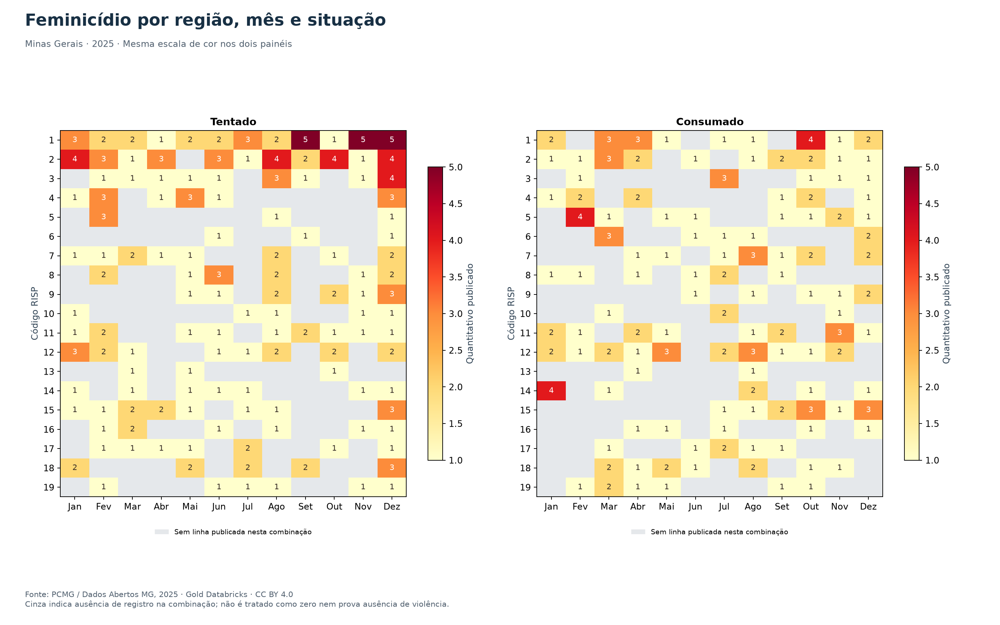

Navegação nesta página
Resultados analíticos — Minas Gerais, 2025
Consultas executadas no Databricks: job 252723981011762, execução 931355409551552, estado SUCCESS.
Evidência completa · SQL reproduzível · Notebook.
As sete consultas usam versões Delta fixadas da Gold e tiveram totais e denominadores reconciliados. Os gráficos abaixo foram gerados localmente a partir desses resultados remotos, sem recalcular as análises nos CSVs de origem.
1. Distribuição mensal

- Violência doméstica: total 162.032; maior quantitativo em Dez (14.771; 9,12% do total anual) e menor em Jun (12.311). O maior mês supera o menor em 19,98%.
- Feminicídio: total 391; maior quantitativo em Dez (57; 14,58% do total anual) e menor em Jun (24). O maior mês supera o menor em 137,50%.
As variações descrevem 2025. Não demonstram sazonalidade recorrente, efeito de políticas ou mudanças no risco: diferenças na duração dos meses, registro e cobertura também podem influenciar os volumes.
2. Concentração municipal e regional


- Violência doméstica: BELO HORIZONTE lidera com 19.150 (11,82%). Os dez municípios exibidos somam 31,04% do total da fonte. A RISP 1 tem o maior volume regional: 19.150 (11,82%).
- Feminicídio: BELO HORIZONTE lidera com 51 (13,04%). Os dez municípios exibidos somam 35,04% do total da fonte. A RISP 1 tem o maior volume regional: 51 (13,04%).
O ranking completo conserva empates de volume com DENSE_RANK. O gráfico exibe dez municípios por fonte; empates no corte usam código municipal para ordenação. Concentração de registros não mede risco individual ou taxa populacional. RISP é apresentada por código, sem nomes regionais inferidos.
3. Naturezas da violência doméstica

- AMEACA: 50.198 (30,98% da fonte doméstica).
- VIAS DE FATO / AGRESSAO: 31.933 (19,71% da fonte doméstica).
- LESAO CORPORAL: 24.886 (15,36% da fonte doméstica).
Essas três naturezas concentram 66,05% dos quantitativos publicados. O inventário contém 174 naturezas. Os valores não são contagem distinta de mulheres nem prova de gravidade comparável entre categorias. S/N não foi traduzido.
4. Feminicídio tentado e consumado



A base registra 391 no quantitativo total: 213 tentados (54,48%) e 178 consumados (45,52%).
| Situação | Mês(es) de maior volume | Quantitativo por mês indicado |
|---|---|---|
| TENTADO | Dez | 39 |
| CONSUMADO | Out | 21 |
| RISP | Tentado | Consumado | % consumado dentro da região |
|---|---|---|---|
| 1 | 33 | 18 | 35,29% |
| 2 | 30 | 15 | 33,33% |
| 3 | 14 | 7 | 33,33% |
| 4 | 12 | 9 | 42,86% |
| 5 | 5 | 12 | 70,59% |
| 6 | 3 | 8 | 72,73% |
| 7 | 11 | 11 | 50,00% |
| 8 | 11 | 7 | 38,89% |
| 9 | 10 | 6 | 37,50% |
| 10 | 5 | 4 | 44,44% |
| 11 | 11 | 13 | 54,17% |
| 12 | 14 | 18 | 56,25% |
| 13 | 3 | 2 | 40,00% |
| 14 | 7 | 9 | 56,25% |
| 15 | 12 | 11 | 47,83% |
| 16 | 7 | 5 | 41,67% |
| 17 | 8 | 6 | 42,86% |
| 18 | 11 | 10 | 47,62% |
| 19 | 6 | 7 | 53,85% |
A composição varia entre regiões e meses; percentuais com pequenos quantitativos devem ser lidos junto dos números absolutos. Não são probabilidades de uma tentativa resultar em morte nem taxas de conversão da violência doméstica. No mapa de calor, as combinações sem linha publicada ficam cinza e não são imputadas como zero.
Limitações comuns
- Medida: SUM(qtde_vitimas), quantitativos publicados; COUNT de linhas não é número de crimes e não há identificação de pessoas únicas.
- Fontes mantidas separadas; sobreposição individual não é verificável. Nenhum total combinado foi calculado.
- Dados registrados não estimam toda a violência ocorrida; cobertura e subnotificação limitam a interpretação.
- Recorte de um ano; sem população, séries históricas ou controle de fatores externos, não há conclusão de risco, causalidade ou sazonalidade recorrente.
- Categorias e hashes correspondem aos snapshots do projeto; revisões da publicação podem mudar os resultados.
- Fonte: PCMG / Portal de Dados Abertos de Minas Gerais, licença CC BY 4.0. Proveniência e URLs.
Arquivos e reprodução
Sete gráficos em PNG e SVG ficam em graficos/; resultados completos em JSON ficam em resultados/. Cada figura tem o mesmo nome-base da consulta, exceto q4_mensal, q4_regioes e q4_regiao_mes, que visualizam as três consultas q4 correspondentes.
python3.12 -m pip install -r requirements-graficos.txt
python3.12 scripts/gerar_graficos.py evidencias/analises_931355409551552.json
Renderização validada em Python 3.12, Matplotlib 3.11.2 e NumPy 2.5.3. Esses comandos exigem Python 3.12 disponível; o Python 3.8 padrão do WSL não foi usado para renderizar. As consultas foram executadas na nuvem; a renderização das figuras foi local. Figuras exportadas não substituem screenshots da interface Databricks exigidos no item 21.